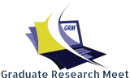

Research exchange
Opportunities to share current work, experience and responsible publication practice.
Research exchange, professional connection and formal presentation of the Publication Excellence and Publication Citation Awards.

Opportunities to share current work, experience and responsible publication practice.
A setting for authors, researchers, editors and institutional representatives to meet.
Formal recognition and photography for eligible Excellence and Citation Award winners.
Successful applicants receive the event date, venue and registration instructions through WhatsApp.
Complete the applicable winner registration by the stated deadline.
Arrive at the specified venue and time in formal dress or national attire.
Collect the certificate and physical award, with official soft-copy photographs provided later.
i-Proclaim events bring researchers, doctoral scholars, editors and institutional representatives together around responsible knowledge exchange.
Share findings and receive constructive perspectives from peers.
Engage with invited speakers and experienced research professionals.
Meet international colleagues, editors and potential collaborators.
Celebrate verified scholarly contributions through formal award presentation.
Research Meet dates, host venue, programme schedule, application cut-off and registration deadline are event-specific. Applicants should rely only on the current announcement published on this page or sent through the official WhatsApp submission conversation.
Arrange collection from the i-Proclaim Kuala Lumpur office after receiving written confirmation.
Eligible non-attending winners may select the US$500 courier registration for dispatch through Malaysia's government postal service.
Use the Contact information in the footer for event enquiries, or begin an award application.